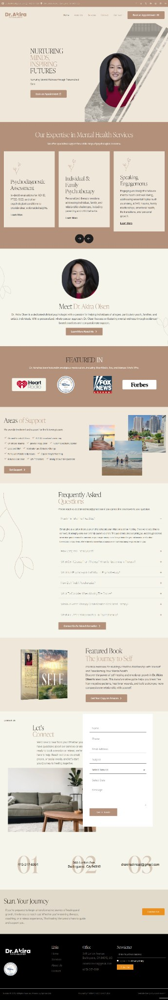

Real project · Mental-health service website
Dr. Akira
A professional service site designed to present expertise, services and appointment options in a clearer sequence.
What the business needed
The website needed to establish professional credibility while making sensitive service information and the route to an appointment straightforward for prospective clients.
What was built
The site brings the professional profile, service information, supporting credibility and appointment options into a more focused customer journey.
What is easier now
A visitor can understand who provides the service, review the relevant help and find the appointment path without searching across disconnected sections.